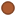

<!doctype html>
<html lang="en">
    <head>
        <meta charset="utf-8">
        <meta http-equiv="X-UA-Compatible" content="IE=edge">
        <meta name="viewport" content="initial-scale=1,user-scalable=no,maximum-scale=1,width=device-width">
        <meta name="mobile-web-app-capable" content="yes">
        <meta name="apple-mobile-web-app-capable" content="yes">
        <link rel="stylesheet" href="css/leaflet.css"><link rel="stylesheet" href="css/L.Control.Locate.min.css">
        <link rel="stylesheet" href="css/qgis2web.css"><link rel="stylesheet" href="css/fontawesome-all.min.css">
        <link rel="stylesheet" href="css/leaflet-measure.css">
        <link rel="stylesheet" href="https://cdn.jsdelivr.net/npm/leaflet.locatecontrol@v0.74.0/dist/L.Control.Locate.min.css" />           
        <link rel="stylesheet" href="full/Control.FullScreen.css" />
	    
        <style>
        html, body, #map {
            width: 100%;
            height: 100%;
            padding: 0;
            margin: 0;
        }
        </style>
        <title></title>
    </head>
    <body>
        <div id="map">
        </div>
        <script src="js/qgis2web_expressions.js"></script>
        <script src="js/leaflet.js"></script><script src="js/L.Control.Locate.min.js"></script>
        <script src="js/leaflet.rotatedMarker.js"></script>
        <script src="js/leaflet.pattern.js"></script>
        <script src="js/leaflet-hash.js"></script>
        <script src="js/Autolinker.min.js"></script>
        <script src="js/rbush.min.js"></script>
        <script src="js/labelgun.min.js"></script>
        <script src="js/labels.js"></script>
        <script src="js/leaflet-measure.js"></script>
        <script src="data/Drenagem_1.js"></script>
        <script src="data/Ns_2.js"></script>
        <script src="data/Bacias_3.js"></script>
        <script src="https://cdn.jsdelivr.net/npm/leaflet.locatecontrol@v0.74.0/dist/L.Control.Locate.min.js" charset="utf-8"></script>
        <script src="full/Control.FullScreen.js"></script>
        <script>
        var highlightLayer;
        function highlightFeature(e) {
            highlightLayer = e.target;

            if (e.target.feature.geometry.type === 'LineString') {
              highlightLayer.setStyle({
                color: '#ffff00',
              });
            } else {
              highlightLayer.setStyle({
                fillColor: '#ffff00',
                fillOpacity: 0.3
              });
            }
        }
        var map = L.map('map', {
            zoomControl:true, maxZoom:19, minZoom:14, zoomControl:true, fullscreenControl: true, fullscreenControlOptions: {position: 'topleft'},maxBounds: [
                            //south west
                            [-22.00508,-46.69833], 
                            //north east
                            [-21.96077,-46.79328]  
                            ]
        }).fitBounds([[-22.001473120563716,-46.771884903005386],[-21.9715909161271,-46.73062669652984]]);
        var hash = new L.Hash(map);
        map.attributionControl.setPrefix('<a href="https://github.com/tomchadwin/qgis2web" target="_blank">qgis2web</a> &middot; <a href="https://leafletjs.com" title="A JS library for interactive maps">Leaflet</a> &middot; <a href="https://qgis.org">QGIS</a>');
        var autolinker = new Autolinker({truncate: {length: 30, location: 'smart'}});
        //L.control.locate({locateOptions: {maxZoom: 19}}).addTo(map);
        
        L.control.locate({initialZoomLevel: 19}).addTo(map);
        //var ctlSidebar = L.control.sidebar('side-bar', {closeButton: false}).addTo(map);
        var measureControl = new L.Control.Measure({
            position: 'topleft',
            primaryLengthUnit: 'meters',
            secondaryLengthUnit: 'kilometers',
            primaryAreaUnit: 'sqmeters',
            secondaryAreaUnit: 'hectares'
        });
        measureControl.addTo(map);
        document.getElementsByClassName('leaflet-control-measure-toggle')[0]
        .innerHTML = '';
        document.getElementsByClassName('leaflet-control-measure-toggle')[0]
        .className += ' fas fa-ruler';
        var bounds_group = new L.featureGroup([]);
        function setBounds() {
        }
        map.createPane('pane_GooglecnSatellite_0');
        map.getPane('pane_GooglecnSatellite_0').style.zIndex = 400;
        var layer_GooglecnSatellite_0 = L.tileLayer('http://www.google.cn/maps/vt?lyrs=s@189&gl=cn&x={x}&y={y}&z={z}', {
            pane: 'pane_GooglecnSatellite_0',
            opacity: 1.0,
            attribution: '<a href="https://www.google.com/intl/zh-CN_cn/permissions/geoguidelines/attr-guide.html">地图数据 ©2016 Google</a>',
            minZoom: 1,
            maxZoom: 28,
            minNativeZoom: 0,
            maxNativeZoom: 21
        });
        layer_GooglecnSatellite_0;
        map.addLayer(layer_GooglecnSatellite_0);
        function pop_Drenagem_1(feature, layer) {
            layer.on({
                mouseout: function(e) {
                    for (i in e.target._eventParents) {
                        e.target._eventParents[i].resetStyle(e.target);
                    }
                },
                mouseover: highlightFeature,
            });
            var popupContent = '<table>\
                    <tr>\
                        <th scope="row">Trecho</th>\
                        <td>' + (feature.properties['Trecho'] !== null ? autolinker.link(feature.properties['Trecho'].toLocaleString()) : '') + '</td>\
                    </tr>\
                    <tr>\
                        <th scope="row">BACIA</th>\
                        <td>' + (feature.properties['BACIA'] !== null ? autolinker.link(feature.properties['BACIA'].toLocaleString()) : '') + '</td>\
                    </tr>\
                    <tr>\
                        <th scope="row">GEOMETRIA</th>\
                        <td>' + (feature.properties['GEOMETRIA'] !== null ? autolinker.link(feature.properties['GEOMETRIA'].toLocaleString()) : '') + '</td>\
                    </tr>\
                    <tr>\
                        <th scope="row">Lâmina</th>\
                        <td>' + (feature.properties['Lâmina'] !== null ? autolinker.link(feature.properties['Lâmina'].toLocaleString()) : '') + '</td>\
                    </tr>\
                    <tr>\
                        <th scope="row">Compriment</th>\
                        <td>' + (feature.properties['Compriment'] !== null ? autolinker.link(feature.properties['Compriment'].toLocaleString()) : '') + '</td>\
                    </tr>\
                    <tr>\
                        <th scope="row">B</th>\
                        <td>' + (feature.properties['B'] !== null ? autolinker.link(feature.properties['B'].toLocaleString()) : '') + '</td>\
                    </tr>\
                    <tr>\
                        <th scope="row">V/H</th>\
                        <td>' + (feature.properties['V/H'] !== null ? autolinker.link(feature.properties['V/H'].toLocaleString()) : '') + '</td>\
                    </tr>\
                </table>';
            layer.bindPopup(popupContent, {maxHeight: 400});
        }

        function style_Drenagem_1_0() {
            return {
                pane: 'pane_Drenagem_1',
                opacity: 1,
                color: 'rgba(72,123,182,1.0)',
                dashArray: '',
                lineCap: 'square',
                lineJoin: 'bevel',
                weight: 3.0,
                fillOpacity: 0,
                interactive: true,
            }
        }
        map.createPane('pane_Drenagem_1');
        map.getPane('pane_Drenagem_1').style.zIndex = 401;
        map.getPane('pane_Drenagem_1').style['mix-blend-mode'] = 'normal';
        var layer_Drenagem_1 = new L.geoJson(json_Drenagem_1, {
            attribution: '',
            interactive: true,
            dataVar: 'json_Drenagem_1',
            layerName: 'layer_Drenagem_1',
            pane: 'pane_Drenagem_1',
            onEachFeature: pop_Drenagem_1,
            style: style_Drenagem_1_0,
        });
        bounds_group.addLayer(layer_Drenagem_1);
        map.addLayer(layer_Drenagem_1);
        function pop_Ns_2(feature, layer) {
            layer.on({
                mouseout: function(e) {
                    for (i in e.target._eventParents) {
                        e.target._eventParents[i].resetStyle(e.target);
                    }
                },
                mouseover: highlightFeature,
            });
            var popupContent = '<table>\
                    <tr>\
                        <th scope="row">nós</th>\
                        <td>' + (feature.properties['nós'] !== null ? autolinker.link(feature.properties['nós'].toLocaleString()) : '') + '</td>\
                    </tr>\
                    <tr>\
                        <th scope="row">COTA</th>\
                        <td>' + (feature.properties['COTA'] !== null ? autolinker.link(feature.properties['COTA'].toLocaleString()) : '') + '</td>\
                    </tr>\
                    <tr>\
                        <th scope="row">X</th>\
                        <td>' + (feature.properties['X'] !== null ? autolinker.link(feature.properties['X'].toLocaleString()) : '') + '</td>\
                    </tr>\
                    <tr>\
                        <th scope="row">Y</th>\
                        <td>' + (feature.properties['Y'] !== null ? autolinker.link(feature.properties['Y'].toLocaleString()) : '') + '</td>\
                    </tr>\
                </table>';
            layer.bindPopup(popupContent, {maxHeight: 400});
        }

        function style_Ns_2_0() {
            return {
                pane: 'pane_Ns_2',
                radius: 6.4,
                opacity: 1,
                color: 'rgba(128,67,36,1.0)',
                dashArray: '',
                lineCap: 'butt',
                lineJoin: 'miter',
                weight: 2.0,
                fill: true,
                fillOpacity: 1,
                fillColor: 'rgba(172,91,49,1.0)',
                interactive: true,
            }
        }
        map.createPane('pane_Ns_2');
        map.getPane('pane_Ns_2').style.zIndex = 402;
        map.getPane('pane_Ns_2').style['mix-blend-mode'] = 'normal';
        var layer_Ns_2 = new L.geoJson(json_Ns_2, {
            attribution: '',
            interactive: true,
            dataVar: 'json_Ns_2',
            layerName: 'layer_Ns_2',
            pane: 'pane_Ns_2',
            onEachFeature: pop_Ns_2,
            pointToLayer: function (feature, latlng) {
                var context = {
                    feature: feature,
                    variables: {}
                };
                return L.circleMarker(latlng, style_Ns_2_0(feature));
            },
        });
        bounds_group.addLayer(layer_Ns_2);
        map.addLayer(layer_Ns_2);
        function pop_Bacias_3(feature, layer) {
            layer.on({
                mouseout: function(e) {
                    for (i in e.target._eventParents) {
                        e.target._eventParents[i].resetStyle(e.target);
                    }
                },
                mouseover: highlightFeature,
            });
            var popupContent = '<table>\
                    <tr>\
                        <th scope="row">begin</th>\
                        <td>' + (feature.properties['begin'] !== null ? autolinker.link(feature.properties['begin'].toLocaleString()) : '') + '</td>\
                    </tr>\
                    <tr>\
                        <th scope="row">Sub</th>\
                        <td>' + (feature.properties['Sub'] !== null ? autolinker.link(feature.properties['Sub'].toLocaleString()) : '') + '</td>\
                    </tr>\
                    <tr>\
                        <th scope="row">area</th>\
                        <td>' + (feature.properties['area'] !== null ? autolinker.link(feature.properties['area'].toLocaleString()) : '') + '</td>\
                    </tr>\
                    <tr>\
                        <th scope="row">largura_</th>\
                        <td>' + (feature.properties['largura_'] !== null ? autolinker.link(feature.properties['largura_'].toLocaleString()) : '') + '</td>\
                    </tr>\
                    <tr>\
                        <th scope="row">area_ha</th>\
                        <td>' + (feature.properties['area_ha'] !== null ? autolinker.link(feature.properties['area_ha'].toLocaleString()) : '') + '</td>\
                    </tr>\
                    <tr>\
                        <th scope="row">declividad</th>\
                        <td>' + (feature.properties['declividad'] !== null ? autolinker.link(feature.properties['declividad'].toLocaleString()) : '') + '</td>\
                    </tr>\
                    <tr>\
                        <th scope="row">%imper</th>\
                        <td>' + (feature.properties['%imper'] !== null ? autolinker.link(feature.properties['%imper'].toLocaleString()) : '') + '</td>\
                    </tr>\
                    <tr>\
                        <th scope="row">%permea</th>\
                        <td>' + (feature.properties['%permea'] !== null ? autolinker.link(feature.properties['%permea'].toLocaleString()) : '') + '</td>\
                    </tr>\
                    <tr>\
                        <th scope="row">n_imper</th>\
                        <td>' + (feature.properties['n_imper'] !== null ? autolinker.link(feature.properties['n_imper'].toLocaleString()) : '') + '</td>\
                    </tr>\
                    <tr>\
                        <th scope="row">n_perme</th>\
                        <td>' + (feature.properties['n_perme'] !== null ? autolinker.link(feature.properties['n_perme'].toLocaleString()) : '') + '</td>\
                    </tr>\
                </table>';
            layer.bindPopup(popupContent, {maxHeight: 400});
        }

        function style_Bacias_3_0() {
            return {
                pane: 'pane_Bacias_3',
                opacity: 1,
                color: 'rgba(228,26,28,1.0)',
                dashArray: '',
                lineCap: 'square',
                lineJoin: 'bevel',
                weight: 4.0,
                fillOpacity: 0,
                interactive: true,
            }
        }
        map.createPane('pane_Bacias_3');
        map.getPane('pane_Bacias_3').style.zIndex = 403;
        map.getPane('pane_Bacias_3').style['mix-blend-mode'] = 'normal';
        var layer_Bacias_3 = new L.geoJson(json_Bacias_3, {
            attribution: '',
            interactive: true,
            dataVar: 'json_Bacias_3',
            layerName: 'layer_Bacias_3',
            pane: 'pane_Bacias_3',
            onEachFeature: pop_Bacias_3,
            style: style_Bacias_3_0,
        });
        bounds_group.addLayer(layer_Bacias_3);
        map.addLayer(layer_Bacias_3);
        var baseMaps = {};
        L.control.layers(baseMaps,{' Bacias': layer_Bacias_3,' Nós': layer_Ns_2,' Drenagem': layer_Drenagem_1,"Google.cn Satellite": layer_GooglecnSatellite_0,}).addTo(map);
        setBounds();
        var i = 0;
        layer_Drenagem_1.eachLayer(function(layer) {
            var context = {
                feature: layer.feature,
                variables: {}
            };
            layer.bindTooltip((layer.feature.properties['Trecho'] !== null?String('<div style="color: #ffcc00; font-size: 10pt; font-family: \'MS Shell Dlg 2\', sans-serif;">' + layer.feature.properties['Trecho']) + '</div>':''), {permanent: true, offset: [-0, -16], className: 'css_Drenagem_1'});
            labels.push(layer);
            totalMarkers += 1;
              layer.added = true;
              addLabel(layer, i);
              i++;
        });
        var i = 0;
        layer_Ns_2.eachLayer(function(layer) {
            var context = {
                feature: layer.feature,
                variables: {}
            };
            layer.bindTooltip((layer.feature.properties['nós'] !== null?String('<div style="color: #ff0066; font-size: 10pt; font-family: \'MS Shell Dlg 2\', sans-serif;">' + layer.feature.properties['nós']) + '</div>':''), {permanent: true, offset: [-0, -16], className: 'css_Ns_2'});
            labels.push(layer);
            totalMarkers += 1;
              layer.added = true;
              addLabel(layer, i);
              i++;
        });
        var i = 0;
        layer_Bacias_3.eachLayer(function(layer) {
            var context = {
                feature: layer.feature,
                variables: {}
            };
            layer.bindTooltip((layer.feature.properties['begin'] !== null?String('<div style="color: #fff5f0; font-size: 10pt; font-family: \'MS Shell Dlg 2\', sans-serif;">' + layer.feature.properties['begin']) + '</div>':''), {permanent: true, offset: [-0, -16], className: 'css_Bacias_3'});
            labels.push(layer);
            totalMarkers += 1;
              layer.added = true;
              addLabel(layer, i);
              i++;
        });
        resetLabels([layer_Drenagem_1,layer_Ns_2,layer_Bacias_3]);
        map.on("zoomend", function(){
            resetLabels([layer_Drenagem_1,layer_Ns_2,layer_Bacias_3]);
        });
        map.on("layeradd", function(){
            resetLabels([layer_Drenagem_1,layer_Ns_2,layer_Bacias_3]);
        });
        map.on("layerremove", function(){
            resetLabels([layer_Drenagem_1,layer_Ns_2,layer_Bacias_3]);
        });
        </script>
    </body>
</html>
